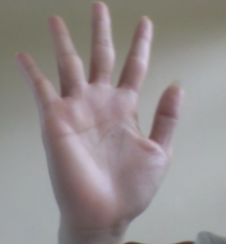
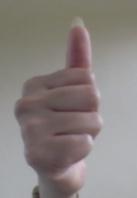
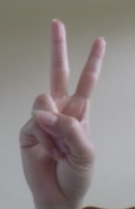
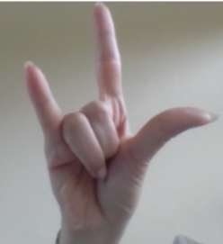
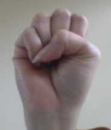
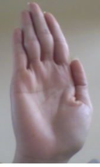
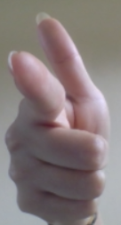
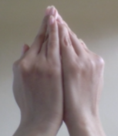

Ký hiệu sẽ hiển thị tại đây...
| STT |
Hình minh họa |
Ký hiệu tay (mô tả) |
Nội dung hiển thị / Phát âm |
Ý nghĩa giao tiếp |
| 1 |  | Bàn tay mở ra, lòng tay hướng về trước | Xin chào! | Chào hỏi khi gặp nhau |
| 2 |  | Ngón cái giơ lên | Tốt lắm! | Đồng ý / khen ngợi |
| 3 |  | Hai ngón giơ hình chữ V | Tạm biệt! | Tạm biệt, thân thiện |
| 4 |  | Dạng “I love you” (ngón cái, trỏ, út giơ lên) | Tôi yêu bạn | Thân thiện, bày tỏ tình cảm |
| 5 |  | Nắm tay lại | Cố lên! | Động viên, khích lệ |
| 6 | | Vẫy tay nhẹ | Hẹn gặp lại! | Tạm biệt vui vẻ |
| 7 |  | Tay giơ lên, lòng tay hướng ra | Xin lỗi! | Thể hiện xin lỗi, dừng lại |
| 8 |  | Chỉ ngón trỏ về phía trước | Bạn đấy! | Nhấn mạnh / chỉ đối tượng |
| 9 | | Tay giả vờ viết trong không khí | Tôi muốn ghi chú | Thể hiện ý muốn viết / học |
| 10 |  | Hai tay chụm lại như nhận quà | Cảm ơn! | Thể hiện lòng biết ơn |